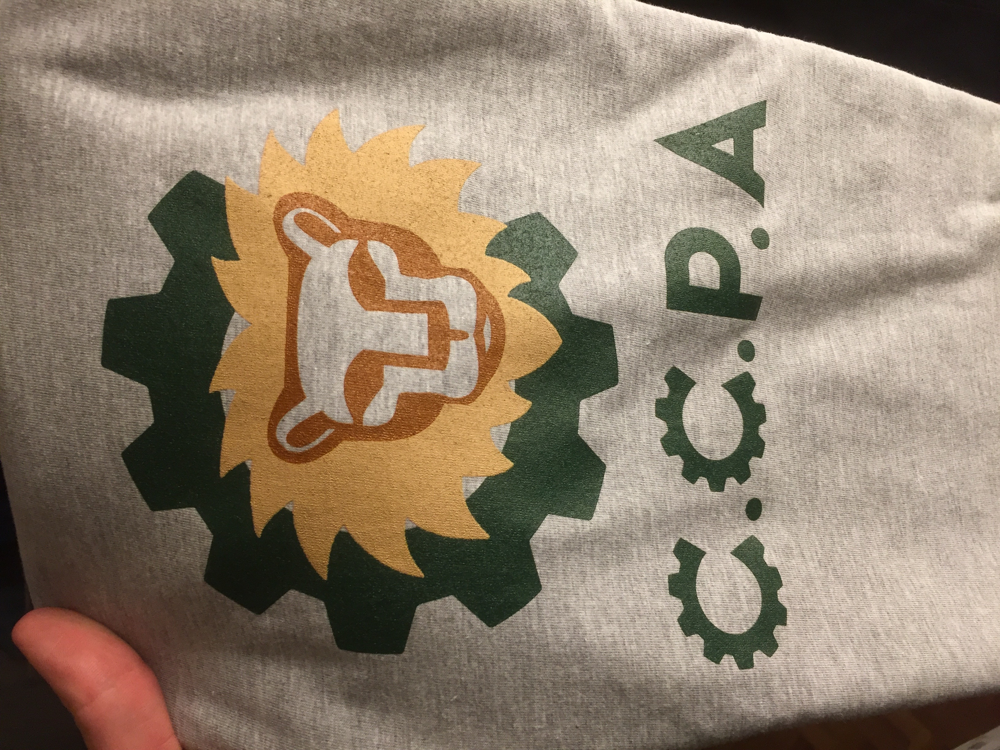

After taking a break during COVID, CCPA's competitive Robotics team is back in action!
In 2022, the team will compete against other clubs in the FIRST Tech Challenge, which includes students around the world from grades 7-12.
This activity is open to D2 and D3 students at CCPA. The Robotics team meet at CCPA after school, two days per week, beginning in October 2022.
To join, ask Mx. Brassey or complete this Google Form.
